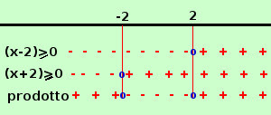
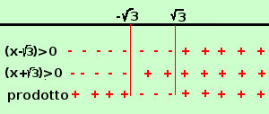
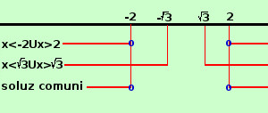

|
risolviamo insieme y = √log(x2 -3) devo partire dalla radice per l'esistenza della radice dovremo porre il radicando maggiore od uguale a zero log(x2 -3) ≥ 0 essendo log il logaritmo naturale avro' che il suo valore e' maggiore od uguale a zero quando l'argomento e' maggiore od uguale ad 1 x2 -3 ≥ 1 x2 -4 ≥ 0 per l'esistenza del logaritmo pongo l'argomento maggiore di zero x2-3 > 0 ottengo le due condizioni
 risolviamo la prima disequazione(x2-4) ≥0 (x-2)(x+2) ≥0 faccio il grafico per prendere gli intervalli ove il prodotto e' positivo o nullo ottengo a x≤-2 ∪ x≥2  risolviamo la seconda disequazionex2-√3 >0 (x-√3)(x+√3) >0 faccio il grafico per prendere gli intervalli ove il prodotto e' positivo ottengo x<-√3 ∪ x>√3 il mio sistema equivale a 
prendo le soluzioni comuni x≤-2 ∪ x≥2 quindi il campo di esistenza e' C.E. = { x ∈ R / x≤-2 ∪ x≥2} |